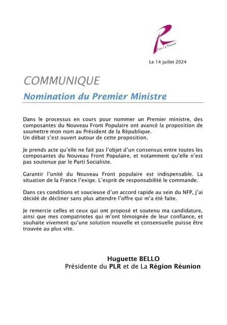

Communiqué relayé
Matignon. Huguette Bello décline la proposition de soumettre son nom
Date indiquée par Facebook · 14 juillet 2024
Repères éditoriaux
Dans le communiqué du 14 juillet 2024 que nous avons relayé, Huguette Bello indique que la proposition de soumettre son nom pour Matignon ne réunit pas le consensus des forces du Nouveau Front populaire. Elle dit vouloir permettre un accord rapide et souhaite qu’une solution consensuelle soit trouvée.

Sources
Archive rouge · document diffusé sur Facebook · AR-0002-FB-01319
À lire aussi · Face au budget d’austérité, le PCF propose un pacte d’avenir